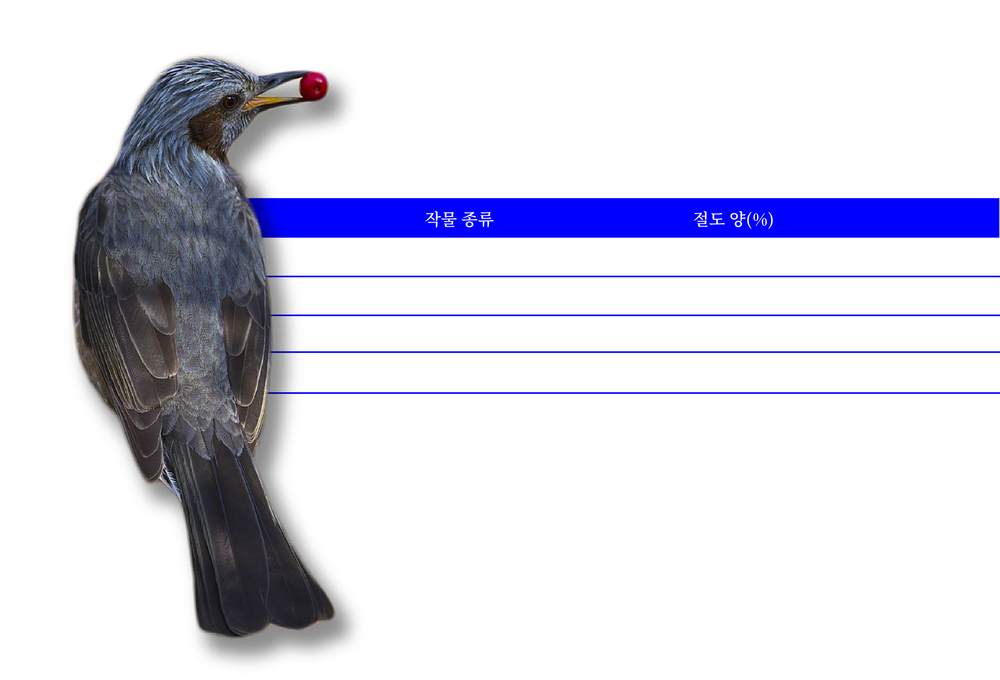

용인에 가정집에서 기른 포도, 블루베리, 복분자, 등이 없어졌다. 특히, 포도는 사람이 먹은 것처럼 포도 껍질과 씨를 뱉어 놓은 흔적도 발견했다. 그래서 누가 훔쳐먹는지 지켜보다가 범인이 나타났다. 그것은 바로 “직박구리”였다.
직접 목격한 피해자는 어의가 없었다. 왜냐하면, 텃밭에서 온 새들을 위해 누룽지,밥을 종종 그릇에 담아 주었기 때문이다. 피해자는 “흥부처럼 새에게 잘 해주면 박씨라도 물어 올줄 알고 잘해줬는데 뒷통수를 맞았다”다며 허탈해 했다.
☞ 다음주 공개수배 : “ 밥달라고 승질내는 동네 깡패 : 까치 ”
1. 생김새
머리와 목은 회색으로 깃털 끝은 뾰족하고 엷은 잿빛이다. 귀깃은 밤색이며, 윗면과 날개는 어두운 회색이다. 아랫면은 회색이고 깃끝에 흰색의 얼룩무늬가 있다. 배옆의 깃털은 황갈색을 띤다. 아래꼬리덮깃은 어두운 잿빛으로 깃 가장자리는 흰색이다. 부리는 뿔빛 검은색이고, 홍채는 세피아 갈색이다.
2. 지역활동
참새목의 직박구리과에 속한 조류로 대한민국의 대표적인 텃새 중 하나다. 서울을 포함한 인천, 경기도 중부지방부터 전라도, 울산, 부산 등 남쪽지역까지 넓게 분포하는 새이다.
3. 범죄 유형:
개인 절도에서 집단 절도까지
직박구리는 기본 2마리 이상, 많게는 10마리이상 무리지어 다닐때가 많다. 만약, 당신이 집에 베란다에 작은 텃밭 식물이나 토마토, 블루베리 등의 열매 과일을 키우고 있는데 직박구리 1마리가 쪼아먹고 있다면,쫓아내는 것이 현명할 수 있다. 그 이유는, 무리지어 사는 새가 친구를 한둘씩 불러, 교대로 쪼아먹고 간다. 그래서 가을철 과수농가의 배, 사과, 감 등에 피해를 주기도 해 과수원 유해조류로 알려져 있다.
1. 절도 리스트
2. 정신적 피해 상황
“뒷통수 제대로 맞아 띵하다”라며 호소하다!
그간 피해자는 새들을 위해 누룽지, 좁쌀, 먹다 남은 밥,과일을 제공해왔다. 하지만 텃밭을 보호하고, 남은 포도라도 지키기 위해 포도위에 종이로 감쌌지만 새가 종이를 찢어냈다. 그래서 작물을 기르기 위해 비료에 쓰였던 돈과 노동이 한순간에 사라져 작물을 수확했을 때 보람과 기쁨을 얻지 못해 허무하고, 그동안 먹이도 챙겨 주었는데 이렇게 뒷통수를 제대로 맞았다며 호소했다.
아보카도
아보카도 씨는 크고 두꺼워서 싹이 돋을 때까지 오래기간이 걸렸다. 아보카도씨를 잘 닦아 흙에 반정도 씨앗이 드러내게 심는다. 그리고 삼일에 한번씩 물을 흙이 촉촉할 정도로 준다. 베란다나 집안에서 키운다면, 환기를 자주 시켜주자!
두개를 심었는데, 하나는 3주가 지나고 씨앗이 올라왔다. 남은 하나는 약 2달정도 걸렸다. 아보카도 씨앗에서 싹이 트고, 대가 길어지고 잎이 점점 크게 나온다. 아직 열매까지 자라려면 멀었지만, 도전 해보길 바란다.